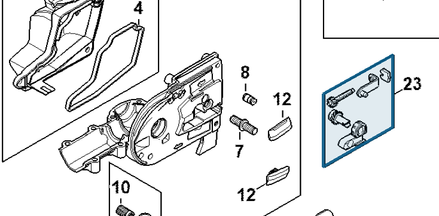

Chain tightener
4182 660 0700
HT 135 — chain tensioner
Chain-tensioning assembly on the gear head.
Item 23 Qty listed: 1

HT 135-Z spare-parts list, 10/28/2024. Drawing p. 17; parts table p. 18.
4182 660 0700
Chain-tensioning assembly on the gear head.
Item 23 Qty listed: 1

HT 135-Z spare-parts list, 10/28/2024. Drawing p. 17; parts table p. 18.